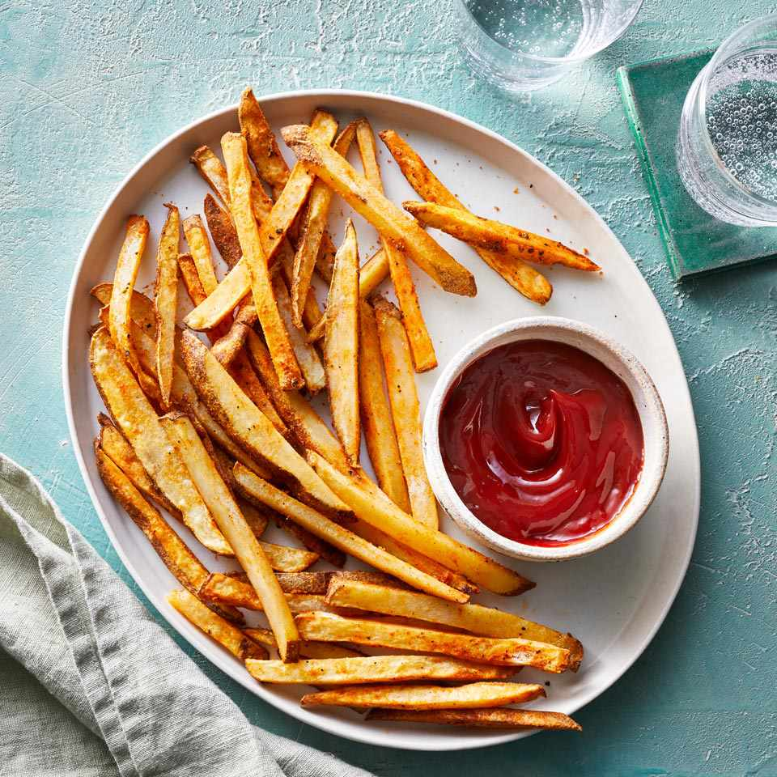

FRENCH FRIES
Hi, I'm Khushi
I'm glad you are here, thankyou for joining me!

Ingredients
- 3 Big potatoes
- Powder: Red chilli, haldi, chaat masala, aamchur, garam-masala (can add other powder of your choice of your choice)
- 250 ml water
- Oil
Steps
- Take potatoes and peel them
- After peeling them, cut them in french-fries shape and let in soak in water.
- After a while, take out chips dry them in a cotton cloth..
- IN the meantime keep water on medium flame.
- When water start boiling, add chips for 5-7 minutes.
- While the chips are boiling, mix all the powder.
- Once the chips are 80% boiled, remove them and keep them on same cotton cloth.
- Keep oil on medium-high flame,fry chips till they are golden brownwhich will take 8-10 minutes
- Soon as you take out chips, sprinkle the masala and shake it well
- Enjoy
More receipes Khushi's Kitchen Creations